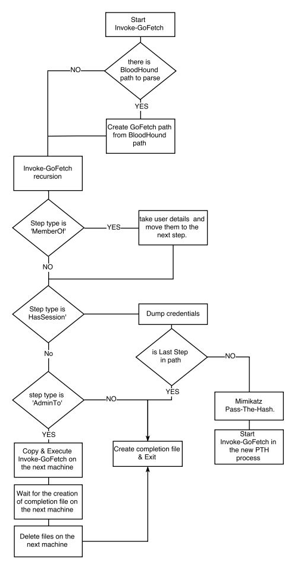

https://github.com/GoFetchAD/GoFetch
GoFetch is a tool to automatically exercise an attack plan generated by the BloodHound application.
GoFetch first loads a path of local admin users and computers generated by BloodHound and converts it to its own attack plan format. Once the attack plan is ready, GoFetch advances towards the destination according to plan step by step, by successively applying remote code execution techniques and compromising credentials with Mimikatz.
